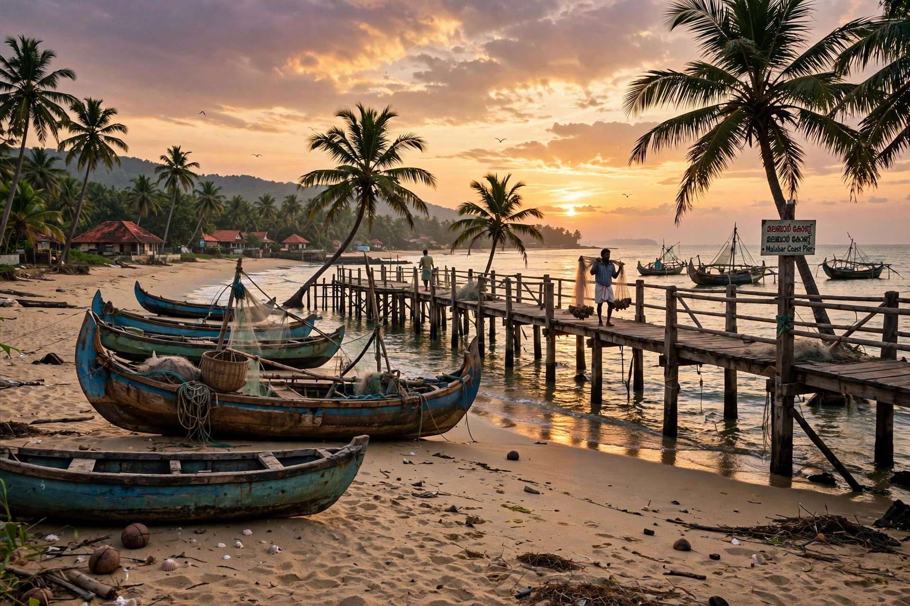

Kozhikode, historically known as Calicut, is a city on the Malabar Coast of Kerala in southwestern India. One of the great trading emporia of the medieval Indian Ocean, it was ruled for centuries by the Zamorin (Samoothiri) and exported pepper and calico cloth — the fabric takes its name from the city. In May 1498 Vasco da Gama landed at nearby Kappad, the first European to reach India by sea, an event that reshaped world trade.
| Kozhikode (Calicut) | |
|---|---|
 Kozhikode Beach | |
| Country | India |
| State | Kerala |
| Historic ruler | Zamorin of Calicut |
| Known for | Spice trade; da Gama's landfall 1498; calico |
Calicut rose to prominence in the thirteenth and fourteenth centuries as Arab and Chinese merchants made it the chief pepper port of the Malabar Coast. The Chinese admiral Zheng He visited repeatedly in the early fifteenth century, and the traveller Ibn Battuta praised its harbour. The Zamorin welcomed foreign traders and guaranteed their security, building a cosmopolitan port with Hindu, Muslim, Christian and Jewish communities. Vasco da Gama's arrival in 1498 opened centuries of European involvement; the Portuguese, under Pedro Álvares Cabral and later Afonso de Albuquerque, fought the Zamorin and his naval captains, the Marakkar admirals, while the city resisted Portuguese demands for a monopoly. The Dutch and then the English East India Company followed; Calicut passed under Mysore's Hyder Ali and Tipu Sultan before coming to the British after 1792.
Today Kozhikode is a major commercial and educational centre of northern Kerala, known for its cuisine (including Kozhikodan biryani and halwa), its literary culture, and the nearby Beypore shipbuilding yards where traditional uru dhows are still constructed. It was designated a UNESCO City of Literature in 2023, the first in India.
Vasco da Gama · Zamorin · Malabar Coast · Columbian exchange